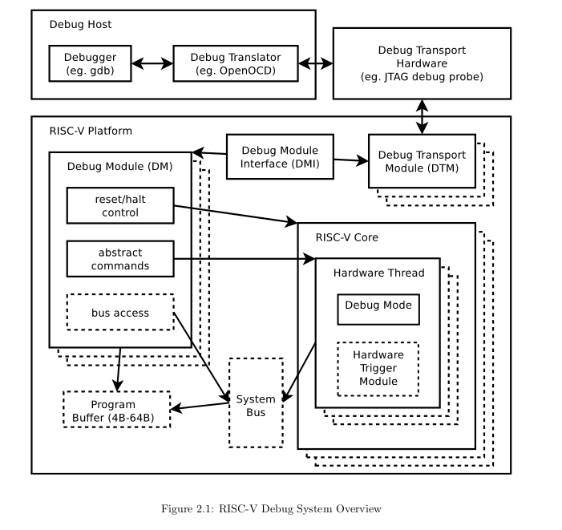

RISC-VプロセッサのシミュレータはVerilog HDLからVerilatorにてC++へ変換して、ソフトウエアとして構築している。 そろそろまともな実機テスト環境を整えたくなってきたので、FPGA上で検証できるシステムを構築する。
デバック環境の検討
RISC-Vでは、RISC-V Debug ModeRISC-V debug spec が定義されている。 この仕様では、デバック用の機能をまとめており、gdbなどはこの機能が実装されていることを前提としている。 オレオレの仕様でも良さそうではあるけれど、ツールをの移植など対応させるのが非常にめんどうくさい。 そこで、RISC-V Debugに沿った実装を行う。 これは、通信のプロトコルについては規定していない。 プロトコルはJTAGやSWDなどいろいろあるが、大体はOpenOCDが頑張ってくれる。 Intel FPGAの場合は、Virtual JTAGがあって、デザインの中でインスタンス化すると、USB Blasterケーブルを通してモジュールと通信できるよう。
そこで、今回はUSBケーブルを通して、JTAG(VJTAG)にてFPAG <-> PC間の通信をする。 制御用のソフトウエアはOpenOCDを用いる。 デバッカはgdbを用いる。 今回実装すべきなのは、VJTAG <-> RISC-V間のデータパスと制御である。
RISC-V Debugの仕様では、以下の図に対応する。 Debug Transport HardwareはUSBダウンロードケーブルとなる。 DTMでは、VJTAGで受け取ったデータをデバック用の命令に変換し、DMIというバスを通して、DMへ送る。 DMは命令をもとに、プロセッサの状態を制御する。 プロセッサはデバックモードの実装が必要となる。 なお、点線の部分は任意の実装となる。 とりあえず、最小限の実装をする。 
やること
- 仕様の調査
- 実装の調査
- VJTAGの調査とテスト
- OpenOCDを使った、VJTAGの制御
- Debug modeの実装
- DTM, DMの実装
- gdbによる実機テスト
こんな感じで進めていく。 まずは、Debug specをしっかり読んでいく。前に読んだときはさっぱりで諦めた(小声)